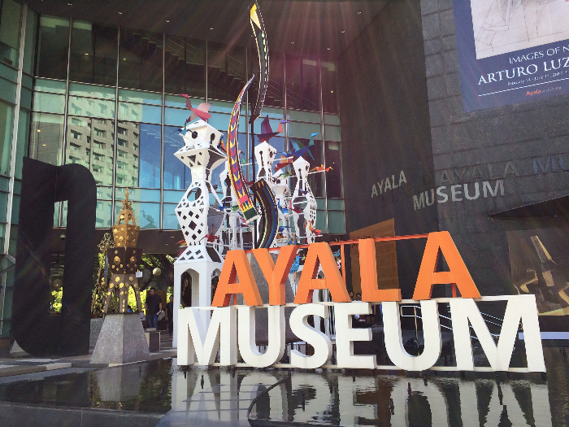

Art
Exhibitions
A stage for culture and imagination
LOCATIONS
NATIONAL MUSEUM OF FINE ARTS
P. Burgos Drive, Rizal Park, Manila
inquiry@nationalmuseum.gov.ph
(+632) 8298-1100
METROPOLITAN MUSEUM OF MANILA
MK Tan Centre
30th Street, Bonifacio Global City
(+63) 917 160 9667

ART UNDERGROUND
2/F Mabini180, 180 A. Mabini St.,
Brgy. Addition Hills, San Juan City
(02) 8723 6147
CASA MANILA MUSEUM
Plaza Sans Luis Complex, General Luna
St, Intramuros, Manila, 1002
Metro Manila
(+63) 917 160 9667

AYALA MUSEUM
Makati Avenue, corner Dela Rosa
Street, Ayala Center, Makati City,
1229 Metro Manila
(+63) 17 834 3845